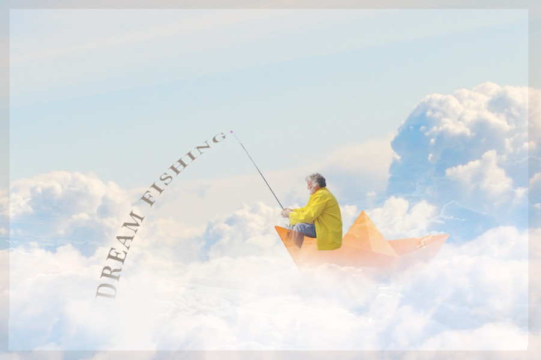

HOME | PIXELS | VECTOR | MOTION | PRINT | CONTACT

PHOTOSHOP IS NOTORIOUS FOR PHOTOMANIPULATION. I WANTED TO CREATE A SURREALISTIC TYPE OF RASTER GRAPHIC WHICH WAS INSPIRED BY THE DREAMWORKS LOGO. THE OLD MAN IN THE BOAT IS DREAM FISHING AMONGST THE CLOUDS IN HOPES OF CATCHING ONE OF HIS ASPIRATIONS. I'M VERY INTERESTED IN COLOR AND WANTED TO GO WITH COMPLIMENTARY SCHEME OF BLUE AND ORANGE TO CREATE A IMPACTFUL CONTRAST.